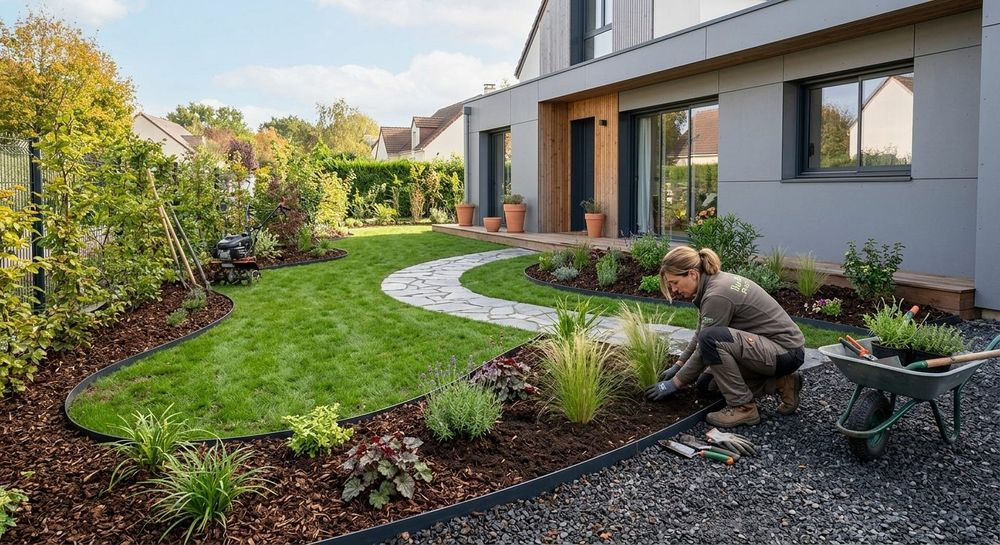
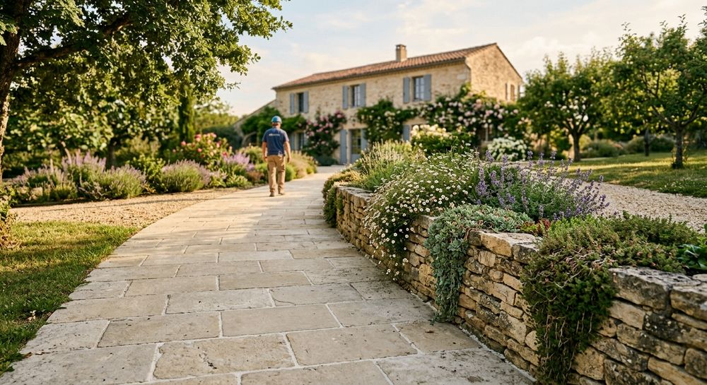
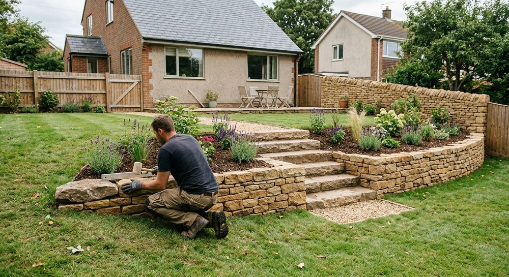
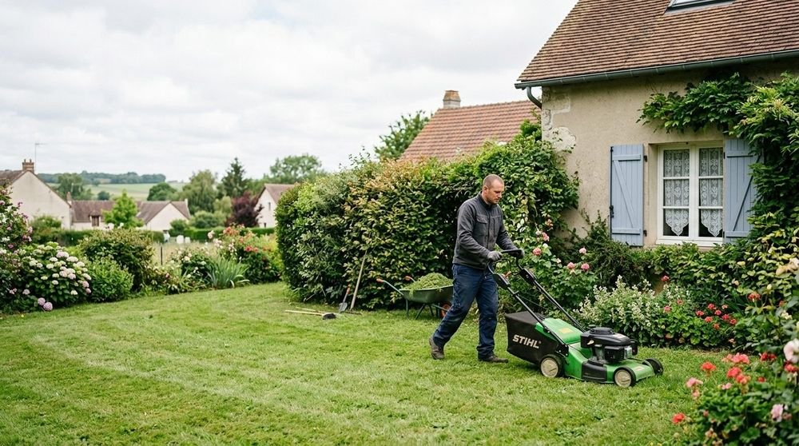

Création d’espaces verts
Conception et aménagement de votre jardin, avec plantations adaptées à votre terrain.
De la conception de votre jardin à son entretien régulier, E.S.A. intervient à Montchauvet (78).

Conception et aménagement de votre jardin, avec plantations adaptées à votre terrain.

Pose de terrasses en bois pour prolonger la maison vers le jardin.

Pose d’allées et de dallages pour circuler dans votre jardin.

Murets, escaliers et ouvrages en pierre pour structurer le jardin.

Tonte, taille et désherbage pour garder votre jardin net.
Appelez E.S.A. ou décrivez votre besoin : nous revenons vers vous.
06 61 09 05 59